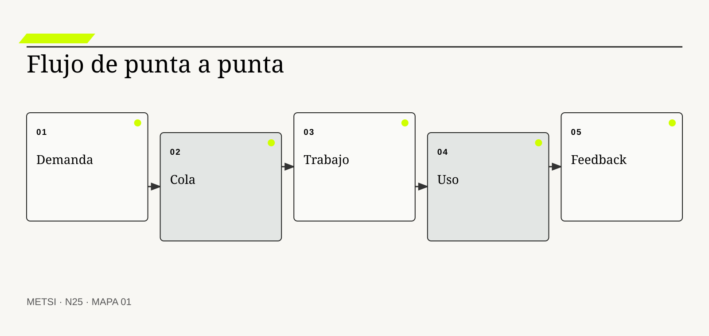
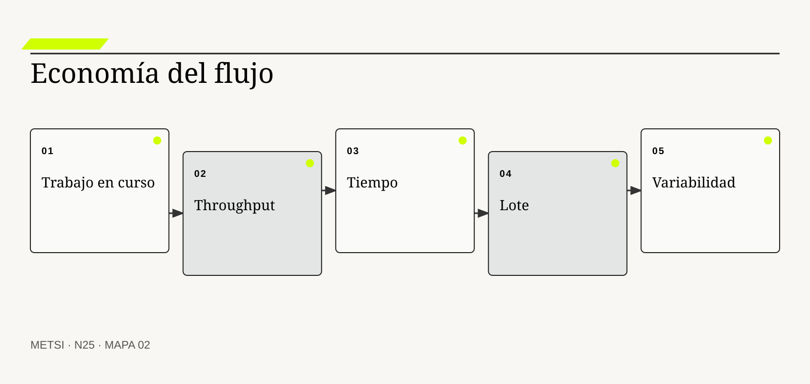
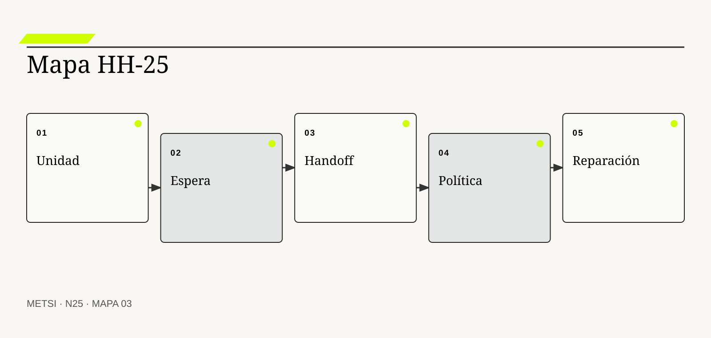

JD
John Little
Formalizó la relación entre inventario, throughput y tiempo.

N25 estudia flujo de punta a punta mediante colas, trabajo en curso, lote, espera, handoffs, feedback y reparación, y separa desempeño sistémico de…
Flujo más allá de las ceremonias: colas, lote, espera y feedback
Ruta de lectura: problema, distinciones, decisiones, prueba, transferencia y preparación.
Nota. SIN NUM. identifica aparatos de orientación y referencia.
Seis voces para ampliar, contrastar y discutir N25.
Formalizó la relación entre inventario, throughput y tiempo.
Desarrollaron una ciencia de fábrica aplicable a variabilidad y flujo.

Llevó economía de colas y lotes al desarrollo de producto.
Construyó principios del sistema de producción Toyota.

Aplicó gestión de flujo y políticas explícitas al trabajo de conocimiento.

Aportó evidencia empírica sobre flujo, entrega y desempeño organizacional.
N25 no resume estas fuentes ni las convierte en receta. Las pone en tensión para construir juicio profesional.
¿Cómo mejorar un sistema de trabajo cuando todas las ceremonias ocurren y, sin embargo, las decisiones y el valor siguen esperando?

N25 estudia flujo de punta a punta mediante colas, trabajo en curso, lote, espera, handoffs, feedback y reparación, y separa desempeño sistémico de actividad local o…
Hotel Horizonte trabaja en sprints de dos semanas. Las reuniones comienzan a horario, el tablero se actualiza y la velocidad es estable. Una corrección sobre asignación accesible tarda ciento dieciocho días desde el primer episodio hasta su uso en todos los turnos.
La mayor parte del tiempo no contiene trabajo activo. El pedido espera validación, el análisis espera datos, el cambio espera ambiente, la prueba espera agenda y la liberación espera comité. Cada área parece ocupada; el sistema completo acumula colas.
Flujo describe el movimiento de una unidad de valor desde demanda hasta resultado y feedback. Para comprenderlo hay que observar trabajo en curso, edad, espera, lote, handoffs, bloqueos, retrabajo y capacidad de reparación. La cadencia de ceremonias puede ayudar, pero no garantiza flujo.
El equipo limita iniciativas, reduce tamaños de lote, acerca prueba y operación, define políticas de entrada y mide tiempo de punta a punta. La velocidad local baja mientras el tiempo total mejora. También aparece una verdad incómoda: algunos controles aportaban protección y no podían simplemente eliminarse.
Optimizar flujo no significa acelerar todo. Significa diseñar movimiento sostenible, hacer visibles colas y elegir dónde la espera protege, dónde destruye valor y quién soporta cada demora.
N25 cierra el Bloque E. Recibe una cartera priorizada y la convierte en un sistema de trabajo observable que entrega, aprende y repara más allá de sus ceremonias.
HH-25 sigue cada slice desde la demanda hasta el outcome. Distingue tiempo activo y espera, mide edad, limita trabajo en curso, reduce lote e integra feedback operacional. Las políticas reservan capacidad para incidentes y obligaciones sin permitir que toda urgencia salte la cola.
N25 estudia flujo de punta a punta mediante colas, trabajo en curso, lote, espera, handoffs, feedback y reparación, y separa desempeño sistémico de actividad local o cumplimiento ceremonial.
N24 deja evidencia y decisiones abiertas que N25 utiliza sin reabrir su contenido. N25 estudia flujo de punta a punta mediante colas, trabajo en curso, lote, espera, handoffs, feedback y reparación, y separa desempeño sistémico de actividad local o cumplimiento ceremonial.
N26 abrirá el Bloque F y ampliará la arquitectura hacia un ecosistema de servicios, plataformas y terceros. N25 entrega un flujo gobernado sin diseñar todavía esa arquitectura.
Little, J. D. C. formaliza la relación entre trabajo en curso, throughput y tiempo. En N25, ese aporte pone a prueba decisiones concretas y no funciona como respaldo ornamental. Su alcance se conserva en N25: ninguna referencia sustituye la evidencia del caso ni la autoridad necesaria para intervenir.
Hopp, W. J. y Spearman, M. L. explica variabilidad, colas y comportamiento operacional. En N25, ese aporte pone a prueba decisiones concretas y no funciona como respaldo ornamental. Su alcance se conserva en N25: ninguna referencia sustituye la evidencia del caso ni la autoridad necesaria para intervenir.
Reinertsen, D. G. explica economía de colas, lotes y costo de demora. En N25, ese aporte pone a prueba decisiones concretas y no funciona como respaldo ornamental. Su alcance se conserva en N25: ninguna referencia sustituye la evidencia del caso ni la autoridad necesaria para intervenir.
Ohno, T. fundamenta flujo, trabajo visible y aprendizaje en operación. En N25, ese aporte pone a prueba decisiones concretas y no funciona como respaldo ornamental. Su alcance se conserva en N25: ninguna referencia sustituye la evidencia del caso ni la autoridad necesaria para intervenir.
Anderson, D. J. aporta límites, políticas y gestión evolutiva del flujo. En N25, ese aporte pone a prueba decisiones concretas y no funciona como respaldo ornamental. Su alcance se conserva en N25: ninguna referencia sustituye la evidencia del caso ni la autoridad necesaria para intervenir.
Forsgren, N., Humble, J. y Kim, G. aportan evidencia sobre capacidades de entrega y desempeño. En N25, ese aporte pone a prueba decisiones concretas y no funciona como respaldo ornamental. Su alcance se conserva en N25: ninguna referencia sustituye la evidencia del caso ni la autoridad necesaria para intervenir.
Kim, G. et al. integran entrega, operación, feedback y mejora continua. En N25, ese aporte pone a prueba decisiones concretas y no funciona como respaldo ornamental. Su alcance se conserva en N25: ninguna referencia sustituye la evidencia del caso ni la autoridad necesaria para intervenir.
Kanban Guides aporta límites, políticas y gestión evolutiva del flujo. En N25, ese aporte pone a prueba decisiones concretas y no funciona como respaldo ornamental. Su alcance se conserva en N25: ninguna referencia sustituye la evidencia del caso ni la autoridad necesaria para intervenir.
Google Cloud aporta evidencia sobre capacidades de entrega y desempeño. En N25, ese aporte pone a prueba decisiones concretas y no funciona como respaldo ornamental. Su alcance se conserva en N25: ninguna referencia sustituye la evidencia del caso ni la autoridad necesaria para intervenir.
Google Cloud aporta una fuente contrastable para definir alcance, evidencia y condiciones de revisión. En N25, ese aporte pone a prueba decisiones concretas y no funciona como respaldo ornamental. Su alcance se conserva en N25: ninguna referencia sustituye la evidencia del caso ni la autoridad necesaria para intervenir.
Project Management Institute provee principios y dominios que deben adaptarse al contexto y al valor. En N25, ese aporte pone a prueba decisiones concretas y no funciona como respaldo ornamental. Su alcance se conserva en N25: ninguna referencia sustituye la evidencia del caso ni la autoridad necesaria para intervenir.
ISO/IEC establece requisitos para gobernar sistemas de gestión de servicios. En N25, ese aporte pone a prueba decisiones concretas y no funciona como respaldo ornamental. Su alcance se conserva en N25: ninguna referencia sustituye la evidencia del caso ni la autoridad necesaria para intervenir.

Flujo de valor es el movimiento de una necesidad hasta una capacidad usada, observada y reparable. La definición fija el objeto de decisión. Si el equipo de N25 no puede expresar qué compromiso organiza, la categoría funciona como etiqueta y no como instrumento.
No es el movimiento de tickets ni la suma de actividades internas. La distinción evita que una palabra familiar oculte otro mecanismo. En N25, confundirlos cambia qué se observa, qué se acepta como avance y quién debe intervenir.
En flujo de valor, el recorrido causal debe mostrar qué condición habilita la acción, qué transformación ocurre y quién absorbe el resultado. Conecta demanda, decisión, construcción, operación y feedback de punta a punta. Si un salto depende sólo de una explicación oral, la estrategia todavía no puede gobernarlo.
La evidencia relevante para flujo de valor no se limita al resultado promedio. Tiempo, outcome, calidad y distribución permiten juzgarlo. N25 busca además casos negativos, diferencias entre poblaciones y señales de que la explicación elegida podría ser insuficiente.
Ejemplo. Una corrección termina cuando el turno la usa y puede resolver una excepción. En N25, el episodio vuelve visible la relación entre ritmo, autoridad, evidencia y capacidad de reparación.
El tradeoff central de flujo de valor aparece entre anticipar y preservar opciones. Anticipar puede reducir coordinación y también fijar una premisa prematura; preservar opciones puede producir aprendizaje y también demorar una protección necesaria. La elección debe declarar cuál de esos costos acepta, durante cuánto tiempo y para quién.
La auditoría de flujo de valor termina con una pregunta de uso: ¿qué podría decidir ahora una persona que antes no podía? En N25, la respuesta debe nombrar una acción, una restricción y una evidencia, no sólo una comprensión mejorada.
Operacionalizar flujo de valor requiere asignar una unidad observable. El equipo define qué episodio contará, desde qué momento, con qué población y bajo qué fuente. Después compara al menos un caso ordinario con otro que fuerce excepción. Esta precisión en N25 evita que una conclusión general se sostenga sólo en ejemplos convenientes.
La decisión profesional no termina en adoptar flujo de valor. Se compara una ruta principal con una explicación rival, se explicita quién queda expuesto y se conserva un modo de revisar. El valor puede ser plural y no siempre fluye por una única secuencia. El límite forma parte del diseño y no una nota posterior.
Trabajo en curso reúne unidades iniciadas que todavía no producen su resultado o cierre. Conviene comenzar por su función profesional. Si el equipo de N25 no puede expresar qué compromiso organiza, la categoría funciona como etiqueta y no como instrumento.
No equivale a backlog, inventario de ideas ni utilización. El contraste importa porque conduce a pruebas distintas. En N25, confundirlos cambia qué se observa, qué se acepta como avance y quién debe intervenir.
El mecanismo de trabajo en curso no se presume por el nombre. Cada unidad consume atención, crea coordinación y alarga las colas del sistema. Debe localizarse dónde comienza, qué relaciones activa, qué demora introduce y qué capacidad de reparación queda disponible cuando la expectativa no se cumple.
Una afirmación sobre trabajo en curso gana fuerza cuando puede reconstruirse desde fuentes independientes. Conteo, edad y bloqueos muestran su carga real. La ausencia de señal también se interpreta: puede significar estabilidad, mala observación o exclusión del caso que más importa.
Ejemplo. Diecisiete iniciativas abiertas dispersan a los mismos especialistas. En N25, el episodio vuelve visible la relación entre ritmo, autoridad, evidencia y capacidad de reparación.
La escala modifica trabajo en curso. Una solución válida para un equipo puede fallar cuando atraviesa sedes, turnos o proveedores porque aumenta la distancia entre señal y autoridad. Antes de ampliar, N25 prueba si la misma decisión conserva significado y reparación bajo esa nueva distribución.
Para evitar consenso aparente, trabajo en curso se revisa con alguien afectado y con alguien responsable de reparar. Las dos perspectivas pueden valorar resultados diferentes y obligan a declarar la prioridad elegida.
En la práctica, trabajo en curso atraviesa más de un área. Se identifican handoffs, esperas, decisiones y datos que cada participante puede ver. Cuando dos áreas usan evidencia distinta en N25, el expediente conserva la divergencia hasta determinar si representa error, perspectiva legítima o una brecha que la estrategia debe resolver.
En una revisión, trabajo en curso debe responder tres preguntas: qué mejora, qué desplaza y qué vuelve más difícil de revertir. Algún trabajo paralelo protege opciones y necesita límite situado. Si esas respuestas cambian, también debe cambiar el compromiso, aunque el trabajo previo haya sido técnicamente correcto.
Una cola es demanda que espera capacidad o una decisión antes de avanzar. El concepto adquiere valor cuando cambia una decisión. Si el equipo de N25 no puede expresar qué compromiso organiza, la categoría funciona como etiqueta y no como instrumento.
No sólo existe donde hay una lista visible. Su vecino conceptual puede parecer equivalente y no lo es. En N25, confundirlos cambia qué se observa, qué se acepta como avance y quién debe intervenir.
Comprender cola exige seguir la decisión en el tiempo. Aparece ante especialidades, aprobaciones, ambientes, información o autoridad escasas. El análisis distingue condición, intervención, señal temprana y consecuencia para evitar atribuir a una práctica un efecto producido por otro cambio simultáneo.
La prueba de cola debe formularse antes de conocer el resultado. Longitud, edad, variabilidad y disciplina de selección la hacen observable. Se registra qué observación sostendría continuar, cuál obligaría a adaptar y cuál activaría detención o escalamiento.
Ejemplo. Cambios esperan al único comité aunque los equipos estén activos. En N25, el episodio vuelve visible la relación entre ritmo, autoridad, evidencia y capacidad de reparación.
El tiempo también altera cola. Una evidencia suficiente para explorar puede ser insuficiente para operar de forma permanente. Por eso se separan prueba local, compromiso transitorio y condición estable, y cada estado conserva fecha, alcance y responsable de revisión.
El registro de cola conserva una explicación rival. Si esa alternativa predice mejor el episodio siguiente, el equipo cambia de curso sin reescribir retrospectivamente lo que creía saber.
La gobernanza de cola incluye quién puede proponer, aprobar, ejecutar, observar y reparar. Esas funciones no se presumen por cargo ni por permiso técnico. N25 las prueba en un escenario donde falta la persona habitual, porque una capacidad que sólo funciona con conocimiento privado todavía no pertenece a la organización.
El juicio sobre cola incluye distribución de consecuencias. Eliminar una cola puede trasladarla a personas menos visibles. Una mejora agregada no alcanza si concentra espera, riesgo o trabajo invisible en un grupo sin autoridad para discutir la decisión.
Tiempo de flujo es el lapso desde que una unidad entra al sistema hasta que alcanza su condición de salida. La definición fija el objeto de decisión. Si el equipo de N25 no puede expresar qué compromiso organiza, la categoría funciona como etiqueta y no como instrumento.
No es esfuerzo, duración de sprint ni tiempo técnico de ciclo aislado. La distinción evita que una palabra familiar oculte otro mecanismo. En N25, confundirlos cambia qué se observa, qué se acepta como avance y quién debe intervenir.
La explicación operacional de tiempo de flujo conecta personas, reglas y tecnología. Incluye espera, trabajo, retrabajo y coordinación. Esa conexión permite decidir qué parte puede modificarse localmente y cuál requiere coordinación con otras autoridades o capacidades.
Para auditar tiempo de flujo, conviene combinar evidencia de diseño, ejecución y consecuencia. Timestamps coherentes y definición estable permiten medir percentiles y dispersión. Ninguna fuente domina automáticamente; una especificación correcta puede convivir con una operación dañina.
Ejemplo. El cambio usa ocho horas de trabajo y espera ciento diez días. En N25, el episodio vuelve visible la relación entre ritmo, autoridad, evidencia y capacidad de reparación.
Existe además una dimensión política en tiempo de flujo. La opción más eficiente puede reducir la capacidad de una persona para cuestionar una decisión o trasladar trabajo sin reconocerlo. N25 registra esa distribución y no la esconde dentro de un indicador agregado.
Una prueba adversa de tiempo de flujo introduce demora, ausencia de autoridad o dato incompleto. El objetivo de N25 no es cubrir todas las fallas, sino revelar si la estrategia mantiene una salida segura fuera del camino ordinario.
El indicador de tiempo de flujo se elige después de formular la decisión. Puede combinar tiempo, calidad, distribución y costo de reparación. Una cifra aislada rara vez explica el mecanismo. En N25, la lectura conjunta de señales evita optimizar velocidad mientras aumenta retrabajo, exclusión o dependencia.
La condición de cierre de tiempo de flujo no es perfección. El inicio elegido modifica la cifra y debe corresponder a la pregunta. Es evidencia suficiente para el uso previsto, riesgo residual aceptado por autoridad y una ruta clara cuando el supuesto deje de cumplirse.

La Ley de Little relaciona trabajo en curso, throughput y tiempo medio en un sistema estable. Conviene comenzar por su función profesional. Si el equipo de N25 no puede expresar qué compromiso organiza, la categoría funciona como etiqueta y no como instrumento.
No es una promesa causal ni una fórmula que ignore variabilidad. El contraste importa porque conduce a pruebas distintas. En N25, confundirlos cambia qué se observa, qué se acepta como avance y quién debe intervenir.
Para que ley de little sea algo más que una etiqueta, debe existir una cadena examinable. Muestra que sostener más trabajo abierto con throughput similar alarga el tiempo. La cadena incluye supuestos, handoffs y efectos laterales que una descripción ideal suele omitir.
El equipo no declara resuelto ley de little por acuerdo retórico. Se usa con fronteras y unidades consistentes durante un período representativo. Una persona ajena al diseño debe poder repetir la prueba y comprender por qué el resultado habilita una decisión concreta.
Ejemplo. Reducir iniciativas activas acorta espera sin aumentar horas. En N25, el episodio vuelve visible la relación entre ritmo, autoridad, evidencia y capacidad de reparación.
La mantenibilidad de ley de little se prueba mediante cambio deliberado. Se modifica una regla, una fuente o una dependencia y se observa quién detecta el impacto, cuánto tarda en responder y qué información necesita. En N25, si la respuesta depende de memoria privada, la capacidad todavía es frágil.
El costo de ley de little se observa tanto en presupuesto como en atención, espera, coordinación y dependencia. Lo que no figura en una factura puede seguir siendo el costo que define la viabilidad.
La transición asociada con ley de little necesita un estado intermedio explícito. Durante ese período conviven reglas, versiones o capacidades diferentes. N25 declara cuál rige para cada población, cómo se comunica y qué contingencia protege a quien podría quedar entre ambos sistemas.
El análisis de ley de little evita dos extremos: conservar por inercia y cambiar por identidad metodológica. Sistemas inestables o poblaciones mezcladas requieren interpretación prudente. Entre ambos queda una decisión provisional con fecha, responsable y prueba de revisión.
Tamaño de lote es la cantidad de cambio acumulada antes de pasar a la etapa siguiente. El concepto adquiere valor cuando cambia una decisión. Si el equipo de N25 no puede expresar qué compromiso organiza, la categoría funciona como etiqueta y no como instrumento.
No es sólo cantidad de código o frecuencia de despliegue. Su vecino conceptual puede parecer equivalente y no lo es. En N25, confundirlos cambia qué se observa, qué se acepta como avance y quién debe intervenir.
El valor de tamaño de lote aparece al contrastar alternativas. Lotes pequeños acortan feedback, reducen riesgo e integración, pero aumentan algunos costos de coordinación. Si dos opciones producen el mismo entregable inmediato, el mecanismo permite compararlas por aprendizaje, dependencia, riesgo residual y posibilidad de salida.
La suficiencia de evidencia para tamaño de lote depende del costo de equivocarse. Se observa tiempo, fallas, costo de transacción y capacidad de recuperación. A mayor irreversibilidad o desigualdad de daño, mayor contraste, supervisión y autoridad se requieren.
Ejemplo. Una regla se prueba por episodio en vez de esperar el paquete trimestral. En N25, el episodio vuelve visible la relación entre ritmo, autoridad, evidencia y capacidad de reparación.
Finalmente, tamaño de lote debe convivir con otras decisiones. Optimizarla de manera aislada puede empeorar flujo, seguridad o comprensión. El expediente N25 explicita dependencias y evita que una mejora local se presente como outcome completo del sistema.
La revisión de tamaño de lote fija fecha y desencadenante. Puede ocurrir por incidente, cambio normativo, nueva población o evidencia acumulada. Sin esa regla en N25, una decisión provisional se vuelve permanente por olvido.
El cierre de tamaño de lote debe sobrevivir a una revisión independiente. La evidencia, las decisiones y los límites se almacenan de manera que otra persona pueda cuestionarlos. En N25, la trazabilidad no busca eliminar desacuerdo; busca que el desacuerdo se concentre en supuestos examinables y no en recuerdos incompatibles.
La estrategia debe poder explicar por qué tamaño de lote recibe cierta inversión y no otra. Lotes demasiado pequeños pueden fragmentar outcome o saturar revisión. Esa explicación conecta valor, costo, aprendizaje y reparación, y permanece abierta a evidencia nueva.
Un handoff transfiere trabajo, información o responsabilidad entre actores o contextos. La definición fija el objeto de decisión. Si el equipo de N25 no puede expresar qué compromiso organiza, la categoría funciona como etiqueta y no como instrumento.
No es toda colaboración ni necesariamente un defecto. La distinción evita que una palabra familiar oculte otro mecanismo. En N25, confundirlos cambia qué se observa, qué se acepta como avance y quién debe intervenir.
En handoff, el recorrido causal debe mostrar qué condición habilita la acción, qué transformación ocurre y quién absorbe el resultado. Introduce traducción, espera y riesgo de pérdida cuando las fronteras no son explícitas. Si un salto depende sólo de una explicación oral, la estrategia todavía no puede gobernarlo.
La evidencia relevante para handoff no se limita al resultado promedio. Retrabajo, aclaraciones y decisiones devueltas revelan su costo. N25 busca además casos negativos, diferencias entre poblaciones y señales de que la explicación elegida podría ser insuficiente.
Ejemplo. Análisis entrega una especificación sin la excepción que Operaciones conocía. En N25, el episodio vuelve visible la relación entre ritmo, autoridad, evidencia y capacidad de reparación.
El tradeoff central de handoff aparece entre anticipar y preservar opciones. Anticipar puede reducir coordinación y también fijar una premisa prematura; preservar opciones puede producir aprendizaje y también demorar una protección necesaria. La elección debe declarar cuál de esos costos acepta, durante cuánto tiempo y para quién.
La auditoría de handoff termina con una pregunta de uso: ¿qué podría decidir ahora una persona que antes no podía? En N25, la respuesta debe nombrar una acción, una restricción y una evidencia, no sólo una comprensión mejorada.
Operacionalizar handoff requiere asignar una unidad observable. El equipo define qué episodio contará, desde qué momento, con qué población y bajo qué fuente. Después compara al menos un caso ordinario con otro que fuerce excepción. Esta precisión en N25 evita que una conclusión general se sostenga sólo en ejemplos convenientes.
La decisión profesional no termina en adoptar handoff. Se compara una ruta principal con una explicación rival, se explicita quién queda expuesto y se conserva un modo de revisar. Algunas separaciones protegen independencia o control y deben diseñarse. El límite forma parte del diseño y no una nota posterior.
Feedback es información sobre el efecto de una acción que puede modificar una decisión posterior. Conviene comenzar por su función profesional. Si el equipo de N25 no puede expresar qué compromiso organiza, la categoría funciona como etiqueta y no como instrumento.
No es reunión, comentario, métrica ni encuesta por sí sola. El contraste importa porque conduce a pruebas distintas. En N25, confundirlos cambia qué se observa, qué se acepta como avance y quién debe intervenir.
El mecanismo de feedback no se presume por el nombre. Necesita señal relevante, baja latencia, audiencia y autoridad para actuar. Debe localizarse dónde comienza, qué relaciones activa, qué demora introduce y qué capacidad de reparación queda disponible cuando la expectativa no se cumple.
Una afirmación sobre feedback gana fuerza cuando puede reconstruirse desde fuentes independientes. Se evalúa por decisiones cambiadas y tiempo hasta la corrección. La ausencia de señal también se interpreta: puede significar estabilidad, mala observación o exclusión del caso que más importa.
Ejemplo. Un incidente llega al equipo antes de ampliar la regla. En N25, el episodio vuelve visible la relación entre ritmo, autoridad, evidencia y capacidad de reparación.
La escala modifica feedback. Una solución válida para un equipo puede fallar cuando atraviesa sedes, turnos o proveedores porque aumenta la distancia entre señal y autoridad. Antes de ampliar, N25 prueba si la misma decisión conserva significado y reparación bajo esa nueva distribución.
Para evitar consenso aparente, feedback se revisa con alguien afectado y con alguien responsable de reparar. Las dos perspectivas pueden valorar resultados diferentes y obligan a declarar la prioridad elegida.
En la práctica, feedback atraviesa más de un área. Se identifican handoffs, esperas, decisiones y datos que cada participante puede ver. Cuando dos áreas usan evidencia distinta en N25, el expediente conserva la divergencia hasta determinar si representa error, perspectiva legítima o una brecha que la estrategia debe resolver.
En una revisión, feedback debe responder tres preguntas: qué mejora, qué desplaza y qué vuelve más difícil de revertir. Más señal sin capacidad de respuesta crea ruido y fatiga. Si esas respuestas cambian, también debe cambiar el compromiso, aunque el trabajo previo haya sido técnicamente correcto.

Variabilidad son diferencias en llegada, tamaño, dificultad o capacidad que alteran el comportamiento del flujo. El concepto adquiere valor cuando cambia una decisión. Si el equipo de N25 no puede expresar qué compromiso organiza, la categoría funciona como etiqueta y no como instrumento.
No equivale a desorden ni puede eliminarse completamente. Su vecino conceptual puede parecer equivalente y no lo es. En N25, confundirlos cambia qué se observa, qué se acepta como avance y quién debe intervenir.
Comprender variabilidad exige seguir la decisión en el tiempo. Aumenta espera cuando el sistema opera cerca de saturación. El análisis distingue condición, intervención, señal temprana y consecuencia para evitar atribuir a una práctica un efecto producido por otro cambio simultáneo.
La prueba de variabilidad debe formularse antes de conocer el resultado. Distribuciones, percentiles y escenarios distinguen patrones de promedios. Se registra qué observación sostendría continuar, cuál obligaría a adaptar y cuál activaría detención o escalamiento.
Ejemplo. Los picos de check-in vuelven crítica una cola invisible en días normales. En N25, el episodio vuelve visible la relación entre ritmo, autoridad, evidencia y capacidad de reparación.
El tiempo también altera variabilidad. Una evidencia suficiente para explorar puede ser insuficiente para operar de forma permanente. Por eso se separan prueba local, compromiso transitorio y condición estable, y cada estado conserva fecha, alcance y responsable de revisión.
El registro de variabilidad conserva una explicación rival. Si esa alternativa predice mejor el episodio siguiente, el equipo cambia de curso sin reescribir retrospectivamente lo que creía saber.
La gobernanza de variabilidad incluye quién puede proponer, aprobar, ejecutar, observar y reparar. Esas funciones no se presumen por cargo ni por permiso técnico. N25 las prueba en un escenario donde falta la persona habitual, porque una capacidad que sólo funciona con conocimiento privado todavía no pertenece a la organización.
El juicio sobre variabilidad incluye distribución de consecuencias. La holgura necesaria puede parecer ineficiencia local. Una mejora agregada no alcanza si concentra espera, riesgo o trabajo invisible en un grupo sin autoridad para discutir la decisión.
Throughput es la cantidad de unidades que alcanzan salida en un período. La definición fija el objeto de decisión. Si el equipo de N25 no puede expresar qué compromiso organiza, la categoría funciona como etiqueta y no como instrumento.
No es productividad individual ni puntos completados. La distinción evita que una palabra familiar oculte otro mecanismo. En N25, confundirlos cambia qué se observa, qué se acepta como avance y quién debe intervenir.
La explicación operacional de throughput conecta personas, reglas y tecnología. Refleja capacidad del sistema y definición de unidad. Esa conexión permite decidir qué parte puede modificarse localmente y cuál requiere coordinación con otras autoridades o capacidades.
Para auditar throughput, conviene combinar evidencia de diseño, ejecución y consecuencia. Se interpreta junto con calidad, demanda, trabajo en curso y outcome. Ninguna fuente domina automáticamente; una especificación correcta puede convivir con una operación dañina.
Ejemplo. El hotel cuenta episodios resueltos, no tareas técnicas cerradas. En N25, el episodio vuelve visible la relación entre ritmo, autoridad, evidencia y capacidad de reparación.
Existe además una dimensión política en throughput. La opción más eficiente puede reducir la capacidad de una persona para cuestionar una decisión o trasladar trabajo sin reconocerlo. N25 registra esa distribución y no la esconde dentro de un indicador agregado.
Una prueba adversa de throughput introduce demora, ausencia de autoridad o dato incompleto. El objetivo de N25 no es cubrir todas las fallas, sino revelar si la estrategia mantiene una salida segura fuera del camino ordinario.
El indicador de throughput se elige después de formular la decisión. Puede combinar tiempo, calidad, distribución y costo de reparación. Una cifra aislada rara vez explica el mecanismo. En N25, la lectura conjunta de señales evita optimizar velocidad mientras aumenta retrabajo, exclusión o dependencia.
La condición de cierre de throughput no es perfección. Aumentarlo mediante unidades triviales o defectuosas destruye sentido. Es evidencia suficiente para el uso previsto, riesgo residual aceptado por autoridad y una ruta clara cuando el supuesto deje de cumplirse.
Eficiencia de flujo compara tiempo activo con tiempo total para localizar espera, no para exigir actividad continua. Conviene comenzar por su función profesional. Si el equipo de N25 no puede expresar qué compromiso organiza, la categoría funciona como etiqueta y no como instrumento.
No es utilización de personas ni objetivo universal de cien por ciento. El contraste importa porque conduce a pruebas distintas. En N25, confundirlos cambia qué se observa, qué se acepta como avance y quién debe intervenir.
Para que eficiencia de flujo sea algo más que una etiqueta, debe existir una cadena examinable. Revela dónde el sistema deja inmóvil una unidad mientras protege ocupación local. La cadena incluye supuestos, handoffs y efectos laterales que una descripción ideal suele omitir.
El equipo no declara resuelto eficiencia de flujo por acuerdo retórico. Muestreo de episodios y causas de espera orienta decisiones. Una persona ajena al diseño debe poder repetir la prueba y comprender por qué el resultado habilita una decisión concreta.
Ejemplo. La corrección trabaja un día y espera cuatro meses. En N25, el episodio vuelve visible la relación entre ritmo, autoridad, evidencia y capacidad de reparación.
La mantenibilidad de eficiencia de flujo se prueba mediante cambio deliberado. Se modifica una regla, una fuente o una dependencia y se observa quién detecta el impacto, cuánto tarda en responder y qué información necesita. En N25, si la respuesta depende de memoria privada, la capacidad todavía es frágil.
El costo de eficiencia de flujo se observa tanto en presupuesto como en atención, espera, coordinación y dependencia. Lo que no figura en una factura puede seguir siendo el costo que define la viabilidad.
La transición asociada con eficiencia de flujo necesita un estado intermedio explícito. Durante ese período conviven reglas, versiones o capacidades diferentes. N25 declara cuál rige para cada población, cómo se comunica y qué contingencia protege a quien podría quedar entre ambos sistemas.
El análisis de eficiencia de flujo evita dos extremos: conservar por inercia y cambiar por identidad metodológica. Alguna espera agrega control, aprendizaje o seguridad. Entre ambos queda una decisión provisional con fecha, responsable y prueba de revisión.
Un sistema de feedback y reparación detecta desvíos, decide respuesta y restaura capacidad con aprendizaje. El concepto adquiere valor cuando cambia una decisión. Si el equipo de N25 no puede expresar qué compromiso organiza, la categoría funciona como etiqueta y no como instrumento.
No es sólo observabilidad técnica ni retrospectiva. Su vecino conceptual puede parecer equivalente y no lo es. En N25, confundirlos cambia qué se observa, qué se acepta como avance y quién debe intervenir.
El valor de sistema de feedback y reparación aparece al contrastar alternativas. Conecta señales de operación, usuarios, negocio y riesgo con autoridad y acción. Si dos opciones producen el mismo entregable inmediato, el mecanismo permite compararlas por aprendizaje, dependencia, riesgo residual y posibilidad de salida.
La suficiencia de evidencia para sistema de feedback y reparación depende del costo de equivocarse. Tiempo de detección, recuperación y prevención muestran su funcionamiento. A mayor irreversibilidad o desigualdad de daño, mayor contraste, supervisión y autoridad se requieren.
Ejemplo. Recepción reporta una excepción y la regla se corrige antes del siguiente lote. En N25, el episodio vuelve visible la relación entre ritmo, autoridad, evidencia y capacidad de reparación.
Finalmente, sistema de feedback y reparación debe convivir con otras decisiones. Optimizarla de manera aislada puede empeorar flujo, seguridad o comprensión. El expediente N25 explicita dependencias y evita que una mejora local se presente como outcome completo del sistema.
La revisión de sistema de feedback y reparación fija fecha y desencadenante. Puede ocurrir por incidente, cambio normativo, nueva población o evidencia acumulada. Sin esa regla en N25, una decisión provisional se vuelve permanente por olvido.
El cierre de sistema de feedback y reparación debe sobrevivir a una revisión independiente. La evidencia, las decisiones y los límites se almacenan de manera que otra persona pueda cuestionarlos. En N25, la trazabilidad no busca eliminar desacuerdo; busca que el desacuerdo se concentre en supuestos examinables y no en recuerdos incompatibles.
La estrategia debe poder explicar por qué sistema de feedback y reparación recibe cierta inversión y no otra. Automatizar feedback sin juicio puede amplificar ruido o sesgo. Esa explicación conecta valor, costo, aprendizaje y reparación, y permanece abierta a evidencia nueva.
El instrumento organiza una decisión concreta y no una descripción total. Cada campo debe completarse con evidencia disponible, incertidumbre explícita y autoridad identificada. Si un campo todavía no puede responderse, se registra como asunto abierto y no se completa por inferencia.
El expediente se prueba con un escenario ordinario y uno adverso. Una persona que no participó en su construcción debe poder reconstruir qué se decidió, por qué, qué permanece incierto y cuál es la próxima puerta. El cierre no exige certeza total; exige incertidumbre gobernada y una salida practicable.
Una empresa completa formularios en dos días, pero tarda noventa en habilitar un proveedor. Compras, legales, seguridad y finanzas optimizan sus tareas mientras el expediente espera.
HH-25 sigue una unidad completa, distingue controles necesarios de esperas accidentales y reduce lote sin borrar obligaciones.
La mejora sistémica puede reducir utilización local y aumentar capacidad efectiva.
Un equipo elimina revisiones para reducir tiempo de ciclo y duplica despliegues.
Las fallas llegan antes a operación, crece el retrabajo y el tiempo hasta outcome empeora.
Fluir no es omitir protección. Es integrar la protección con el menor lote y feedback útil.
La prueba integral de flujo más allá de las ceremonias: colas, lote, espera y feedback toma una decisión real y la recorre desde su origen hasta una consecuencia observable. Utiliza unidad de valor, inicio y salida, demanda, trabajo en curso para evitar que el análisis quede dividido en artefactos independientes. Cada afirmación debe encontrar una fuente, una autoridad y una condición de revisión. Cuando dos registros no coinciden, la diferencia se conserva como hallazgo hasta explicar su mecanismo.
El escenario ordinario verifica que n25 estudia flujo de punta a punta mediante colas, trabajo en curso, lote, espera, handoffs, feedback y reparación, y separa desempeño sistémico de actividad local o cumplimiento ceremonial. El escenario adverso modifica una dependencia, introduce demora y deja ausente a la persona que suele resolver. El equipo observa si la estrategia detecta el cambio, limita el daño, comunica incertidumbre y activa reparación sin recurrir a conocimiento privado.
La comparación incluye una alternativa descartada. Se documenta por qué no fue elegida, qué supuesto la volvería preferible y qué costo tendría recuperarla. Este ejercicio protege opciones futuras y evita presentar la decisión actual como única solución técnicamente posible. También vuelve discutibles los costos hundidos cuando aparece evidencia nueva.
La prueba concluye con una defensa breve ante una audiencia ajena al equipo. Esa audiencia debe poder reconstruir el problema, objetar la evidencia y comprender por qué la salida propuesta es proporcional. Si sólo puede repetir la recomendación, el expediente todavía no sostiene una decisión profesional. Si puede reconocer límites y actuar ante una excepción, existe capacidad transferible.
Medir velocidad como outcome simplifica una decisión que depende de propósito, evidencia y consecuencia. La velocidad inicial se paga cuando operación descubre el supuesto omitido. La corrección vuelve al episodio, identifica quién absorbe el costo y define una prueba antes de continuar.
Optimizar un área parece reducir coordinación, pero confunde acuerdo con conocimiento suficiente. El equipo debe comparar una explicación rival, localizar autoridad y registrar qué señal cambiaría el curso elegido.
Maximizar utilización desplaza incertidumbre hacia personas que no participaron de la elección. Corregirlo exige reconstruir el mecanismo, hacer visible el trabajo añadido y establecer una condición de salida proporcional al daño posible.
Ignorar trabajo invisible convierte una práctica en fin. La revisión pregunta qué función debía cumplir, qué evidencia produjo y por qué sigue siendo necesaria. Si la función desapareció, la práctica se adapta o se retira.
Confundir actividad con flujo oculta una frontera. El artefacto puede cerrar y la capacidad seguir incompleta. Un escenario adverso permite observar handoffs, excepciones y reparación antes de ampliar compromiso.
Reducir lote sin capacidad completa confunde cumplimiento formal con decisión defendible. Se necesita conectar fuente, interpretación, implementación y efecto, incluyendo la autoridad que acepta el riesgo residual.
Eliminar esperas protectoras suele premiar lo visible y dejar fuera mantenimiento, soporte y aprendizaje. La corrección compara el ciclo completo, documenta dependencia y ensaya una salida real.
Aceptar urgencias sin política reduce diversidad de casos a un promedio conveniente. Se revisan poblaciones, extremos y daños asimétricos para evitar que una mejora global silencie una pérdida crítica.
Medir sólo promedios borra memoria y vuelve inexplicable el cambio de rumbo. Una baseline y un registro breve permiten conservar razones sin inmovilizar la estrategia.
Recibir feedback sin autoridad deja responsabilidad sin capacidad. El diseño debe unir permiso, recursos, evidencia y posibilidad de reparar; nombrar un dueño no crea por sí mismo una función operativa.
N25 estudia flujo de punta a punta mediante colas, trabajo en curso, lote, espera, handoffs, feedback y reparación, y separa desempeño sistémico de actividad local o cumplimiento ceremonial. El avance profesional consiste en gobernar una capacidad y sus consecuencias, no en defender el nombre de una práctica ni la cantidad de entregables producidos.

Ninguna categoría elimina el juicio situado.
Ninguna categoría elimina el juicio situado. Los indicadores simplifican, los contratos distribuyen poder, la urgencia altera prioridades y la evidencia llega con demora. Por eso el expediente conserva supuestos, poblaciones afectadas, autoridad, excepciones y una fecha de revisión. La disciplina no promete neutralidad: vuelve discutible qué se privilegia y qué se deja de hacer.
N26 abrirá el Bloque F y ampliará la arquitectura hacia un ecosistema de servicios, plataformas y terceros. N25 entrega un flujo gobernado sin diseñar todavía esa arquitectura.
N25 estudia flujo de punta a punta mediante colas, trabajo en curso, lote, espera, handoffs, feedback y reparación, y separa desempeño sistémico de actividad local o cumplimiento ceremonial.
El bloque no propone reemplazar una doctrina por otra. Propone hacer visibles las decisiones que cada práctica organiza, la evidencia que necesita y los daños que puede producir. El resultado es una intervención que puede explicarse, probarse y revisarse.
Flujo de valor: flujo de valor es el movimiento de una necesidad hasta una capacidad usada, observada y reparable.
Trabajo en curso: trabajo en curso reúne unidades iniciadas que todavía no producen su resultado o cierre.
Cola: una cola es demanda que espera capacidad o una decisión antes de avanzar.
Tiempo de flujo: tiempo de flujo es el lapso desde que una unidad entra al sistema hasta que alcanza su condición de salida.
Ley de Little: la Ley de Little relaciona trabajo en curso, throughput y tiempo medio en un sistema estable.
Tamaño de lote: tamaño de lote es la cantidad de cambio acumulada antes de pasar a la etapa siguiente.
Handoff: un handoff transfiere trabajo, información o responsabilidad entre actores o contextos.
Feedback: feedback es información sobre el efecto de una acción que puede modificar una decisión posterior.
Variabilidad: variabilidad son diferencias en llegada, tamaño, dificultad o capacidad que alteran el comportamiento del flujo.
Throughput: throughput es la cantidad de unidades que alcanzan salida en un período.
Eficiencia de flujo: eficiencia de flujo compara tiempo activo con tiempo total para localizar espera, no para exigir actividad continua.
Sistema de feedback y reparación: un sistema de feedback y reparación detecta desvíos, decide respuesta y restaura capacidad con aprendizaje.
Para el encuentro, seleccionar una intervención conocida, completar el instrumento con evidencia verificable y preparar una decisión provisional. Incluir una explicación rival, una condición que obligaría a revisar y una consecuencia para una persona afectada.